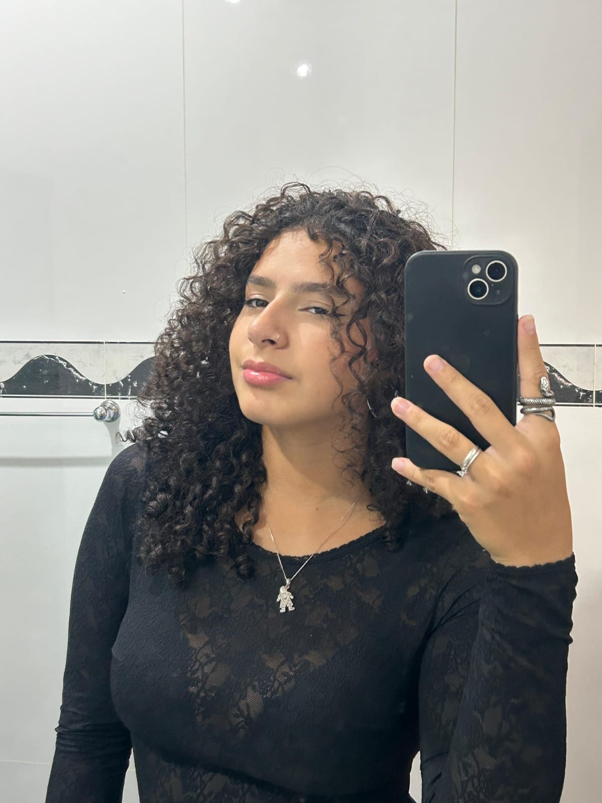
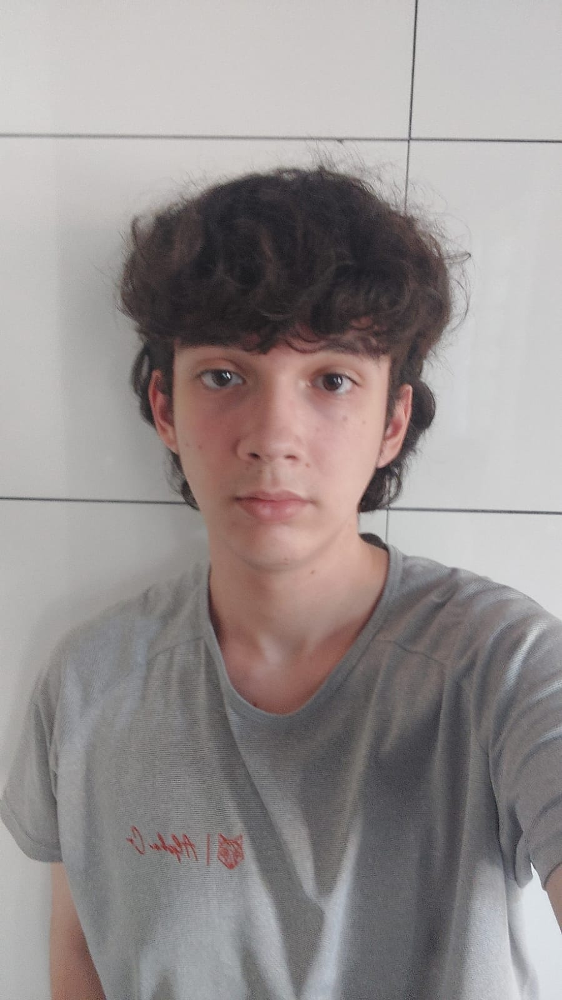

O FatoCheck tem como objetivo promover educação digital e ajudar jovens a identificar notícias falsas.

Ana Luiza Cortello dos Santos
Função: Desenvolvedora Web
Responsável pela criação do site e pela parte técnica, desenvolveu este projeto com o objetivo de conscientizar jovens sobre os riscos das fake news de uma forma mais prática e confiável.
📧 analucortello@gmail.com
📞 (19) 99200-5594
📸 ana.cortellooo

Vitor Pontes Breda
Função: Desenvolvedor de Conteúdo e Pesquisa
Responsável pela pesquisa e organização das informações, auxiliando na criação de conteúdos educativos sobre fake news e conscientização digital.
📧 vitorbreda13b@gmail.com
📞 (19) 99545-8321
📸 vitorbreda